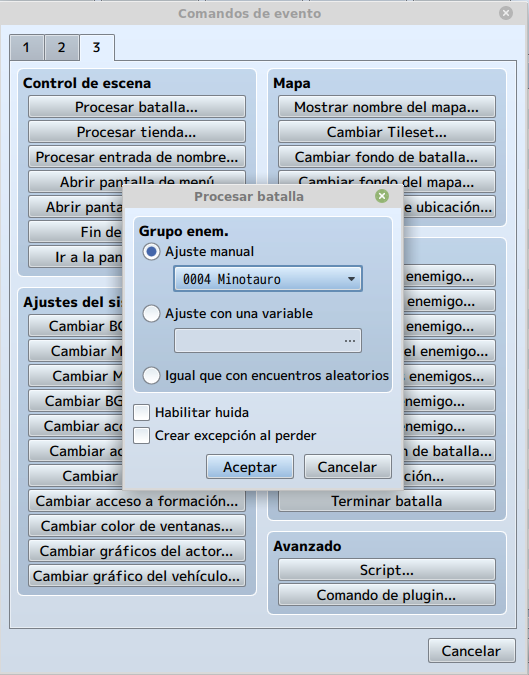
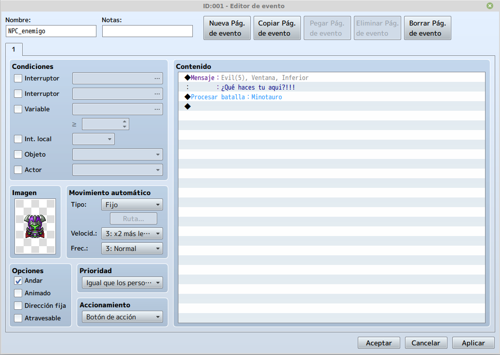
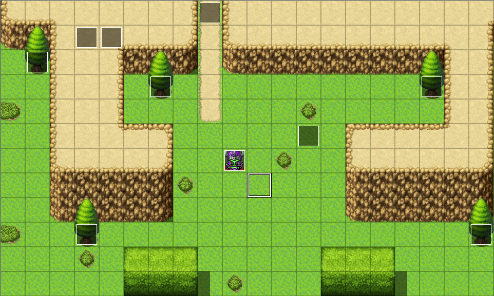
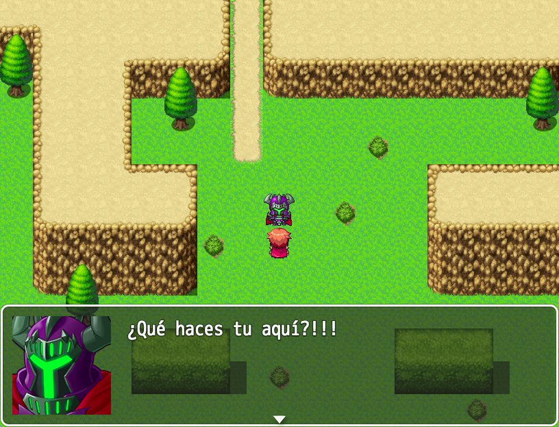

En este tema aprenderemos a incluir los enemigos en RPG Maker y a configurar sus diferentes variaciones para
adaptarlos al gameplay.
• Aprender a configurar los diferentes tipos de enemigos.
Iremos al segundo mapa, entraremos al modo evento y seleccionaremos un recuadro donde queremos que se
ejecute el evento de batalla con nuestro enemigo y daremos a click derecho nuevo.
Ya en la ventana de evento, primero debemos escoger una imagen para el evento, que en este caso será la
miniatura del NPC enemigo.

Una vez seleccionada la imagen del evento, vamos a añadirle un texto que nos dirá cuando interactuemos con él. Este texto podrá contener parte de la historia que queremos contar o mostrar una emoción del enemigo para dar un énfasis mayor a la batalla. Para ello añadiremos una nueva línea de evento y seleccionaremos la opción Mostrar mensaje en la pestaña 1.

Terminado el paso anterior, pasaremos a añadir el evento que desatará la batalla, para ellos añadiremos una nueva línea de evento y seleccionaremos la opción Procesar batalla... en la pestaña 3. Dentro elegiremos el enemigo y definiremos si podemos huir o no de la batalla.

Si hemos realizado todos los pasos anteriores adecuadamente, deberíamos tener algo como esto.

Como se puede ver en la imagen, el evento ya esta creado y listo para ser ejecutado.

Si probamos el mapa podemos ver que el evento se ejecuta sin problemas, cuando interactuamos con el enemigo.
